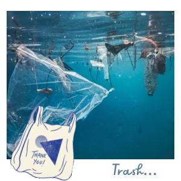

Guysss! I have so many things to tell you! So yesterday I was talking with my friends from the ocean and they told me that Wally the whale accidentally had swollen a whole PLASTIC CHAIR! That 's insane! Fortunately he’s ok, but they told me he’s not the first one that has confused human trash with food. I’m certain that people are not cleaning my beaches, and that’s why things like this are happening…
As well, my coral girlies are not having a great time. They saw my waters have been VERY warm lately and half of them are bleaching due to it! Now my dear fishies cannot have a home. The whole marine ecosystem is slowly breaking apart and it breaks my heart that my creation is passing though this…
Fortunately I saw earlier a group of kids that were cleaning the shore. They collected many plastic bags, soda cans, and many food wrappers. At least there’s a little hope for my little aquatic friends.
